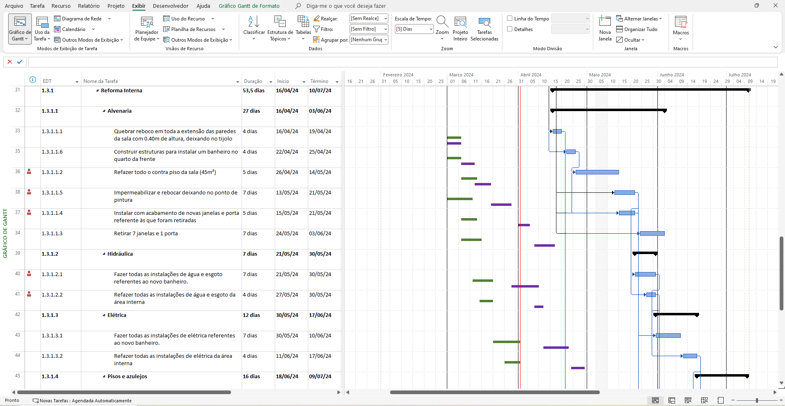

TREINAMENTO • MS PROJECT
TREINAMENTO • MS PROJECT
MS Project —
do Básico ao Avançado
Planejamento e controle de cronogramas na prática.
Um treinamento completo para compreender e utilizar os recursos do MS Project dentro da lógica de planejamento, acompanhamento e controle de cronogramas — do primeiro planejamento aos recursos avançados de análise.
8 horas • Online ao vivo • Turmas reduzidas • Apostila completa • Certificado digital
